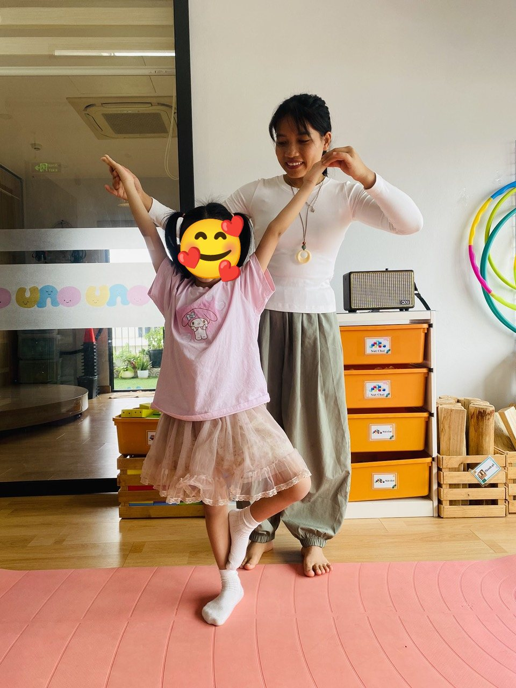
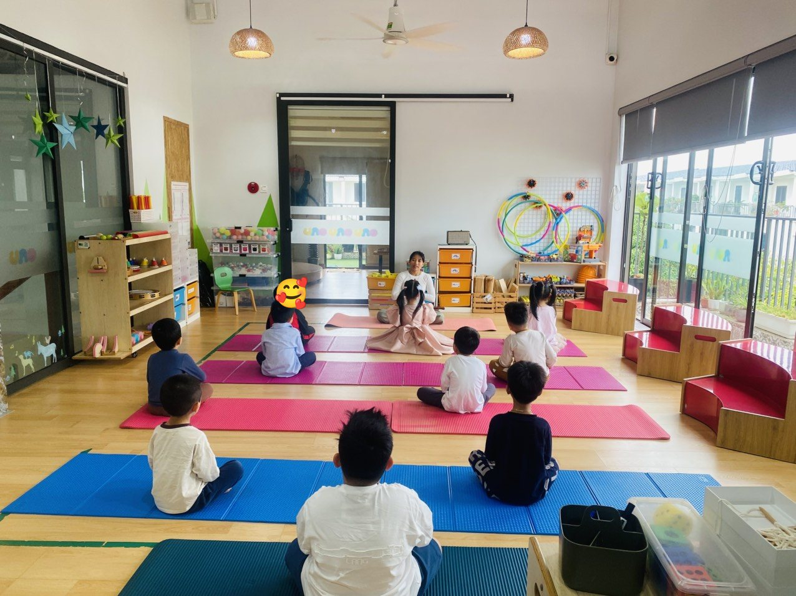
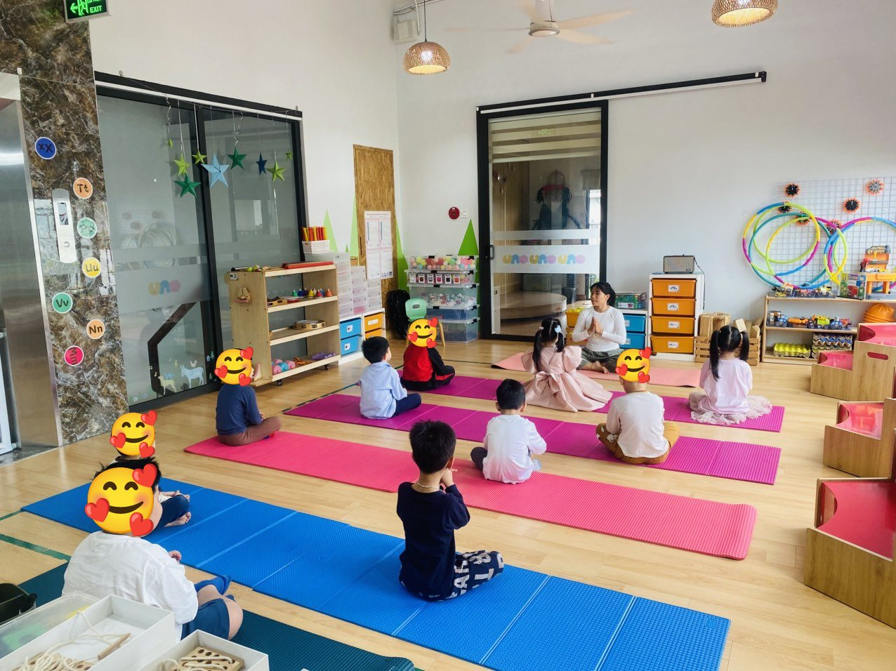
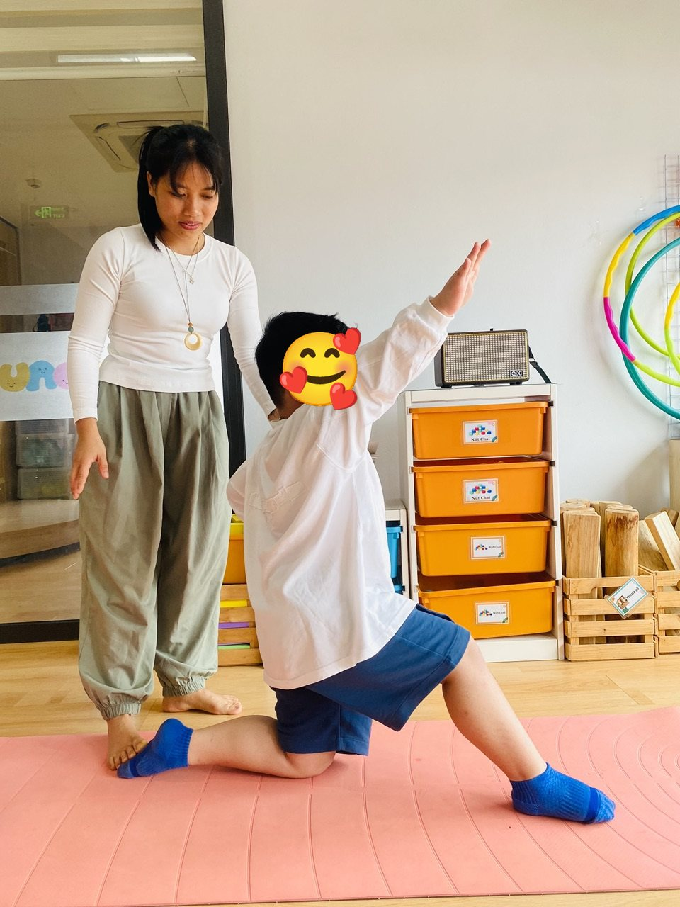
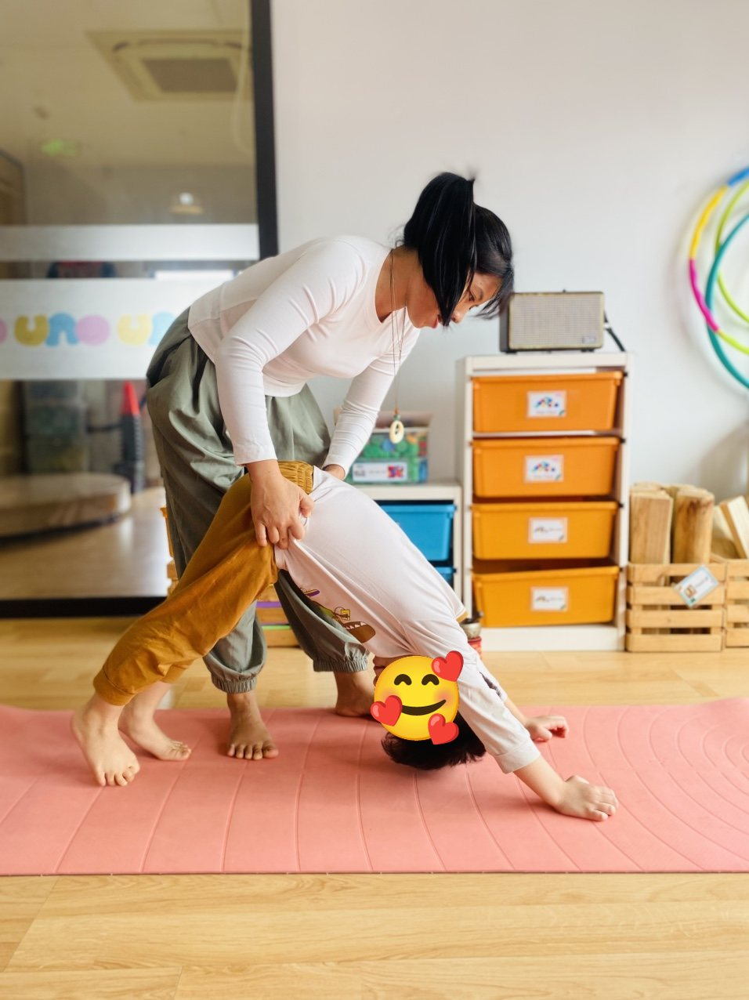
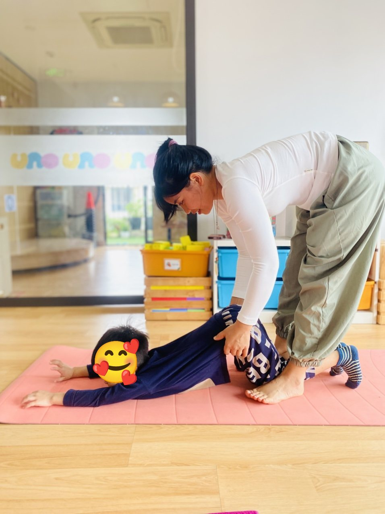
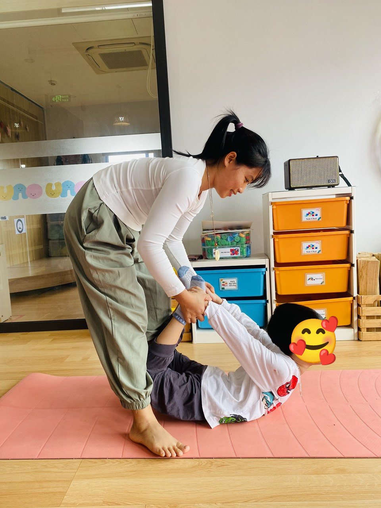
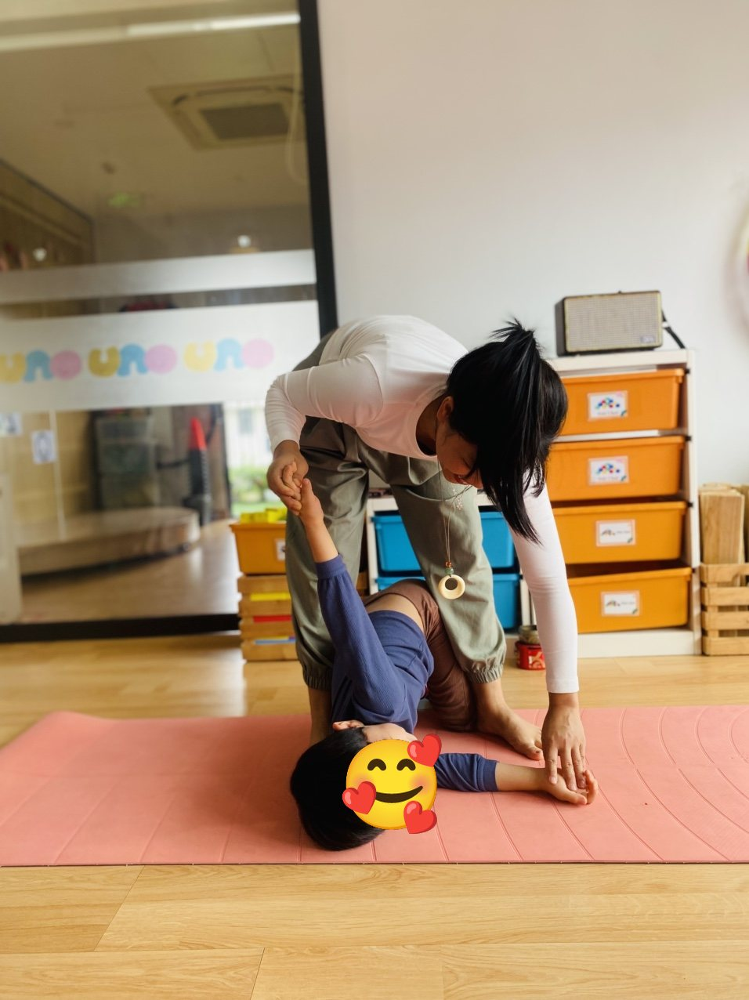

Yoga trẻ em
Yoga với câu đố: 9 câu thơ đố, 9 tư thế cho bé

“Rì rà rì rà, vác nhà đi chơi…” Cô mới đọc tới đó, cả lớp đã nhao lên.
“Con ốc sên!” “Không, con rùa!” Một bạn ngồi cuối thảm giơ tay thật cao, chờ cô gọi tên rồi mới nói nhỏ: “Con rùa ạ, vì nó có cái mai.”
Cô cười. Cả hai đáp án đều đúng. Và chỉ vài giây sau, cả lớp đã cúi rạp xuống thảm, trán chạm sàn, hai tay rụt sát người. Mười mấy chú rùa chui vào nhà ngủ.
Đó là một buổi sáng trong lớp yoga chủ đề câu đố của Sophia. Bài này cô chia sẻ lại 9 câu thơ đố cô dùng hôm ấy, mỗi câu dẫn tới một tư thế. Bố mẹ có thể chơi với con ở nhà. Cô giáo mầm non và các HLV có thể mang vào lớp ngay ngày mai.
Vì sao câu đố hợp với lớp yoga trẻ em
Câu đố là thứ rất Việt Nam. Ông bà mình đố con cháu từ bên hiên nhà, bên mâm cơm, từ những câu chỉ vài chữ mà đoán mãi không ra. Có vần, có nhịp, có hình ảnh. Trẻ nhớ câu đố rất nhanh, nhớ lâu, và thích đố lại người lớn.
Trong giờ yoga, một câu đố làm được mấy việc cùng lúc. Con phải ngồi yên lắng nghe mới đoán được. Con phải tưởng tượng ra con vật, đồ vật trong đầu. Con phải chờ lượt, giơ tay chứ không hét. Rồi khi đáp án hiện ra, cơ thể con được biến thành chính hình ảnh ấy. Nghe, nghĩ, nói, rồi chuyển động.
Nhiều nghiên cứu cũng nói tới điều này. Trẻ mẫu giáo nhạy với vần điệu thường học đọc dễ hơn về sau (Bradley và Bryant, Nature, 1983). Trẻ học từ mới tốt hơn khi từ ấy được gắn với cử động của cả cơ thể (Mavilidi và cộng sự, 2015). Và các hoạt động vừa vận động vừa đòi hỏi tập trung, chờ đợi, ghi nhớ, như yoga hay trò chơi có luật, giúp chức năng tự điều hành của trẻ lớn lên (Diamond và Lee, Science, 2011).
Còn với cô, câu đố có một món quà nhỏ nữa. Nó làm cả lớp chậm lại. Ai cũng nín thở chờ nghe câu tiếp theo. Rồi cô nhắc: “Mình thở một hơi thật dài trước khi trả lời nào.” Hơi thở luôn là cái gốc. Câu đố chỉ là cái cớ dễ thương để con quay về với nó.


Cô dẫn một vòng câu đố thế nào
- Ngồi xuống, thở trước đã. Cả lớp ngồi trên thảm, chắp tay. Cô cho ba hơi thở chậm: hít vào ngửi bông hoa, thở ra thổi ngọn nến. Đầu óc lắng xuống thì tai mới nghe được câu đố.
- Cô đọc chậm, đọc hai lần. Lần đầu đọc như kể chuyện. Lần hai cô nhấn vào chữ gợi ý: “vác nhà đi chơi”, “bờm dài tung bay”. Bạn nhỏ ba tuổi cần lần thứ hai ấy.
- Biết rồi thì giơ tay, đừng hét. Ai giơ tay trước cô cũng không gọi ngay. Cô chờ thêm vài bạn, để bạn chậm hơn có thời gian nghĩ. Rồi cô mời một bạn nói nhỏ đáp án.
- Cả lớp hóa thân. Đáp án đúng là cả lớp cùng biến thành con vật, đồ vật đó. Giữ tư thế trong khoảng 3 đến 5 hơi thở, có tiếng kêu, có chuyển động nhỏ cho vui.
- Thả lỏng, câu tiếp theo. Về ngồi trên thảm, thở một hơi, nghe câu đố mới. Một tiết cô dùng khoảng 6 đến 9 câu, đi từ ngồi, đứng, xuống thảm, rồi nằm.
Có một điều cô luôn nhớ: đoán sai cũng được khen. “Con ốc sên à? Ốc sên cũng vác nhà đi chơi thật đấy. Giỏi lắm!” Câu đố trong lớp yoga không phải bài kiểm tra. Nó là lời mời con nghĩ, rồi chơi.
9 câu thơ đố và 9 tư thế
Các câu đố dưới đây cô viết lại theo thể lục bát và đồng dao, có vần cho dễ nhớ. Bấm “Bé đoán xem” để mở đáp án. Thứ tự đã được sắp sẵn theo nhịp một tiết học: ngồi, đứng, xuống thảm, rồi nằm nghỉ.
1Câu đố số 1
Con gì hai cánh mỏng manh, Sắc màu rực rỡ lượn quanh khóm hoa, Hút mật xong lại bay xa, Hôm qua sâu nhỏ, nay ra cánh rồi?
Đố bé là gì?🦋 Tư thế con bướm
Con ngồi trên thảm, hai lòng bàn chân áp vào nhau, hai tay ôm lấy bàn chân. Hai đầu gối là đôi cánh. Bướm bay chậm, bay nhanh, rồi đậu lên một bông hoa: cánh dừng lại, lưng ngồi thật cao.
🌬 Hơi thở: Hít vào, bướm ngửi hương hoa. Thở ra, cánh vỗ nhẹ một cái.
💛 Cô hay để ý: Cô không ấn đầu gối con xuống sàn. Cánh mỗi bạn cao thấp khác nhau, vậy là đẹp rồi. Với cô, cái lưng ngồi thẳng như thân cây quan trọng hơn đôi gối thấp.
2Câu đố số 2
Cây gì chẳng có nhánh cành, Lá to như cánh quạt xanh mát lành, Quả cong từng nải ngọt thanh, Khỉ con trông thấy chạy nhanh lại gần?
Đố bé là gì?🍌 Tư thế cây chuối (đứng một chân)
Con đứng vững trên hai chân, rồi nhấc một bàn chân đặt vào mắt cá hoặc bắp chân bên kia. Hai tay vươn thật cao, xòe ra như hai tàu lá chuối. Gió thổi tới, lá đung đưa nhè nhẹ. Đổi chân cho đủ hai bên.
🌬 Hơi thở: Hít vào, lá vươn cao. Thở ra, gió thổi “vù” thật khẽ.
💛 Cô hay để ý: Người lớn hay nói “trồng cây chuối” là chống tay lộn ngược đầu. Với các bạn mầm non, cô không cho trồng cây chuối ngược. Cây chuối của lớp mình đứng trên một chân. Cô cũng nhắc con không đặt bàn chân vào ngay khớp gối. Bạn nào chưa vững thì để mũi chân chạm sàn, hoặc nắm tay bạn bên cạnh.
3Câu đố số 3
Ban ngày đi ngủ trốn đâu, Đêm về lấp lánh trên đầu bé xinh, Lúc tròn, lúc khuyết lung linh, Có chú Cuội ngồi một mình gốc đa?
Đố bé là gì?
🌙 Tư thế trăng khuyết (đứng nghiêng người)
Con đứng hai chân sát nhau, hai tay đưa lên đầu, chụm lòng bàn tay. Nghiêng người sang phải thành trăng khuyết. Về giữa, hai tay vòng thành trăng rằm tròn. Rồi nghiêng sang trái.
🌬 Hơi thở: Hít vào, vươn lên giữa thành trăng tròn. Thở ra, nghiêng thành trăng khuyết.
💛 Cô hay để ý: Tư thế này kéo dài hai bên sườn và cột sống. Trong ảnh, cô đặt tay hai bên người bạn nhỏ chỉ để con cảm nhận đường cong của mình, không kéo. Nghiêng ít mà thở đều tốt hơn nghiêng sâu mà nín thở.
4Câu đố số 4
Con gì bờm dài tung bay, Bốn chân lộc cộc chạy ngay ra đồng, Lưng cao chở khách ruổi rong, Hí vang một tiếng là xong dặm dài?
Đố bé là gì?
🐴 Tư thế con ngựa (người cưỡi ngựa)
Con bước một chân dài ra phía trước, gối trước gập, gối sau hạ xuống thảm. Một hoặc hai tay vươn cao chéo lên trời như bờm ngựa tung bay. Thêm tiếng vó “lộc cộc” bằng lưỡi cho vui. Đổi chân cho đủ hai bên.
🌬 Hơi thở: Hít vào, bờm vươn lên. Thở ra, ngựa hí “hí hí”.
💛 Cô hay để ý: Gối sau đặt trên chỗ thảm mềm. Gối trước nằm trên cổ chân, không đổ ra ngoài. Tư thế này mở hông và vươn dài cả thân mình, rất hợp với các bạn ngồi học nhiều.
5Câu đố số 5
Con gì canh giữ cửa nhà, Thấy người lạ hoắc là la gâu gâu, Chủ về vẫy đuôi thật mau, Quấn chân, chạy trước chạy sau đón mừng?
Đố bé là gì?
🐶 Tư thế chó úp mặt
Từ tư thế bò, con đặt hai bàn tay xuống thảm, duỗi chân, đẩy mông lên cao. Người thành hình ngọn núi nhỏ. Chú chó vẫy đuôi (lắc mông), nhấc một chân lên như đang chạy đón chủ, sủa “gâu gâu”.
🌬 Hơi thở: Thở ra “gâu”. Hít vào, nhìn về phía hai bàn chân.
💛 Cô hay để ý: Đầu ở thấp hơn tim nên cô chỉ cho giữ ngắn, khoảng 3 hơi thở rồi quỳ xuống nghỉ. Gối chùng được, gót không cần chạm sàn. Trong ảnh, cô đỡ nhẹ ở hông để con cảm nhận lưng mình dài ra.
6Câu đố số 6
Con gì bơi lội giỏi giang, Nhảy lên mặt sóng rộn ràng tiếng reo, Mõm dài, miệng cười trong veo, Tuy tên là cá, vẫn theo bú mẹ?
Đố bé là gì?🐬 Tư thế cá heo
Con quỳ, đặt hai cẳng tay xuống thảm, hai tay đan vào nhau. Duỗi chân ra sau, đẩy mông lên. Cá heo nhảy: đưa cằm ra trước hai bàn tay rồi lùi về, như đang nhô lên khỏi mặt sóng.
🌬 Hơi thở: Thở ra “phù” khi cá heo nhô lên. Hít vào khi lùi về.
💛 Cô hay để ý: Tư thế này dồn sức lên vai. Với các bạn 4 đến 6 tuổi, cô chỉ cho nhảy 2 đến 3 lần ngắn. Mỏi thì về tư thế em bé nghỉ. Câu đố này còn mở ra chuyện thú vị: cá heo không phải cá, cá heo bú sữa mẹ.
7Câu đố số 7
Rì rà rì rà, Vác nhà đi chơi, Chơi đến tối trời, Chui vào nhà ngủ.
Đố bé là gì?
🐢 Tư thế con rùa (em bé)
Con quỳ gối, ngồi lên gót chân, gập người về trước cho trán chạm thảm. Hai tay duỗi dài ra trước là rùa thò đầu đi chơi. Rút tay về sát người là rùa chui vào mai đi ngủ.
🌬 Hơi thở: Hít vào, bụng phồng lên như cái mai. Thở ra thật chậm, “rì rà… rì rà…”.
💛 Cô hay để ý: Đây là tư thế nghỉ. Cô đặt tay lên lưng con thật nhẹ, ấm, không ấn. Có bạn đoán là ốc sên. Cũng đúng, cô vẫn khen. Ốc sên cũng vác nhà đi chơi mà.
8Câu đố số 8
Con gì to nhất biển khơi, Lưng như hòn đảo nổi trôi giữa dòng, Thở phun nước tựa cầu vồng, Cất lời hát giữa mênh mông sóng trào?
Đố bé là gì?
🐳 Cá voi vẫy đuôi
Con nằm ngửa, co gối rồi duỗi hai chân lên trời làm đuôi cá voi, vẫy vẫy. Bạn nào lớn hơn có thể nâng nhẹ đầu, nhìn đuôi của mình. Rồi cá voi phun nước: chu môi thổi một hơi thật dài.
🌬 Hơi thở: Hít vào bằng mũi, bụng căng như cá voi lặn sâu. Thở ra bằng miệng “phùùù” phun nước lên trời.
💛 Cô hay để ý: Lưng dưới áp xuống thảm, cổ thả lỏng. Cô chỉ giữ nhẹ cổ chân để con tự giữ đuôi, không kéo chân con về phía đầu.
9Câu đố số 9
Mình thon chỉ bé tí ti, Mắt nằm dưới đuôi, đầu thì nhọn ghê, Dắt theo sợi chỉ đi về, Áo con bị rách, chú về vá ngay?
Đố bé là gì?
🪡 Cây kim và sợi chỉ (nằm thư giãn)
Con nằm ngửa, duỗi thẳng từ ngón chân tới đầu ngón tay, hai tay vươn qua đầu. Thân dài, thẳng, nhọn như cây kim. Rồi cô đi “xâu chỉ”: chạm nhẹ đầu ngón tay từng bạn. Bạn nào được chạm thì thả tay xuống, mềm như sợi chỉ, nằm yên.
🌬 Hơi thở: Hít vào, kim kéo dài ra. Thở ra, mềm như sợi chỉ.
💛 Cô hay để ý: Cô để cây kim ở cuối tiết. Đi từ duỗi căng sang thả mềm, cơ thể con tự hiểu thế nào là thư giãn, dễ nằm yên hơn nhiều so với một câu “các con nằm im nào”.
🎁 Hộp câu đố: bốc thăm một câu
Bố mẹ, cô giáo đọc to câu đố cho bé. Bé đoán xong thì mở đáp án, cả nhà cùng làm tư thế và giữ 5 hơi thở.
Bấm “Bốc câu đố” để mở hộp nhé!
Video: đoán cùng các bạn
Video ngắn khoảng một phút để bố mẹ mở cho bé xem trước giờ tập. Mỗi câu đố hiện ra vài giây, bé đoán thật to, rồi đáp án và tư thế hiện ra.
Gợi ý một tiết yoga câu đố 35 phút
| Thời gian | Hoạt động |
|---|---|
| 3 phút | Chào nhau, ngồi trên thảm, chắp tay, 3 hơi thở ngửi hoa thổi nến. |
| 5 phút | Khởi động: xoay cổ tay, cổ chân, lắc vai, vươn người. Cô đố luôn những câu ngắn: “Cái gì xoay tròn tròn ở cuối cánh tay?” |
| 18 phút | Vòng câu đố: con bướm, cây chuối, mặt trăng, con ngựa, con chó, cá heo, con rùa. Mỗi câu khoảng 2 đến 3 phút. |
| 4 phút | Trò chơi: con đố lại cô. Một bạn lên làm một tư thế, cả lớp đoán bạn là con gì. |
| 5 phút | Cá voi, rồi cây kim và sợi chỉ. Nằm thư giãn, cô đi xoa nhẹ đầu từng bạn. |
Phần “con đố lại cô” là phần các con thích nhất. Có bạn nằm ngửa, giơ cả tay cả chân lên trời, cả lớp đoán mãi không ra. “Con là con gián bị lật ạ!” Cả phòng cười lăn. Cô ghi lại câu ấy, để lần sau đố các lớp khác.
Câu đố không dừng ở thảm tập
Tất cả các câu đố trong bài đều là thiên nhiên quanh con: cây chuối ngoài vườn, vầng trăng trên trời, con rùa, con chó, cá heo, cá voi ngoài biển. Cô hay dặn bố mẹ thế này. Tối nay, nếu có trăng, hãy dắt con ra sân, đi chân đất một lúc, ngước lên trời và đố con: “Ban ngày đi ngủ trốn đâu…?” Cuối tuần về quê, đứng cạnh bụi chuối, đố con câu chuối. Con sẽ nhớ cả câu đố, cả buổi tối ấy, cả bàn tay bố mẹ.
Yoga với trẻ nhỏ không chỉ là tư thế. Là hơi thở chậm lại. Là cái lưng được vươn dài, cong, duỗi, xoay mỗi ngày. Là bữa cơm ăn chậm, giấc ngủ đủ, là được ra nắng, được chạm đất, được người lớn lắng nghe. Một câu đố nhỏ mở được rất nhiều cánh cửa như thế.
Điều cô học được từ những câu đố
Trẻ con không cần cô giảng giải vì sao phải thở chậm. Con chỉ cần một lý do để muốn nghe. Câu đố cho con lý do ấy.
Và cô học được cách chờ. Chờ bạn chậm nhất giơ tay. Chờ bạn nhút nhát nói nhỏ đáp án. Chờ cả lớp cười xong rồi mới đọc câu tiếp theo. Một lớp yoga trẻ em đẹp nhất, với cô, là lớp mà ai cũng có lượt của mình.
“Rì rà rì rà, vác nhà đi chơi.” Chậm thôi. Nhà vẫn ở trên lưng mình mà.
🌿 Thầy cô muốn dạy yoga trẻ em theo cách này?
Khóa Đào tạo HLV Yoga trẻ em của Sophia có cả kho câu đố, đồng dao, truyện kể, trò chơi theo chủ đề, cách xếp một tiết học từ động sang tĩnh và cách giữ an toàn cho từng độ tuổi. Bố mẹ muốn con được tập ở lớp cô thì nhắn cô hỏi lịch nhé.
Đọc thêm: Yoga trẻ em không phải yoga người lớn thu nhỏ, 51 truyện Yoga chủ đề và 20 trò chơi trong lớp Yoga.
📚 Tài liệu tham khảo
- Bradley L, Bryant PE. Categorizing sounds and learning to read: a causal connection. Nature, 1983;301:419–421.
- Mavilidi MF, Okely AD, Chandler P, Cliff DP, Paas F. Effects of integrated physical exercises and gestures on preschool children’s foreign language vocabulary learning. Educational Psychology Review, 2015;27:413–426.
- Diamond A, Lee K. Interventions shown to aid executive function development in children 4 to 12 years old. Science, 2011;333:959–964.
- Lillard AS, Lerner MD, Hopkins EJ, et al. The impact of pretend play on children’s development: a review of the evidence. Psychological Bulletin, 2013;139(1):1–34.
- Caine D, DiFiori J, Maffulli N. Physeal injuries in children’s and youth sports: reasons for concern? British Journal of Sports Medicine, 2006;40:749–760.